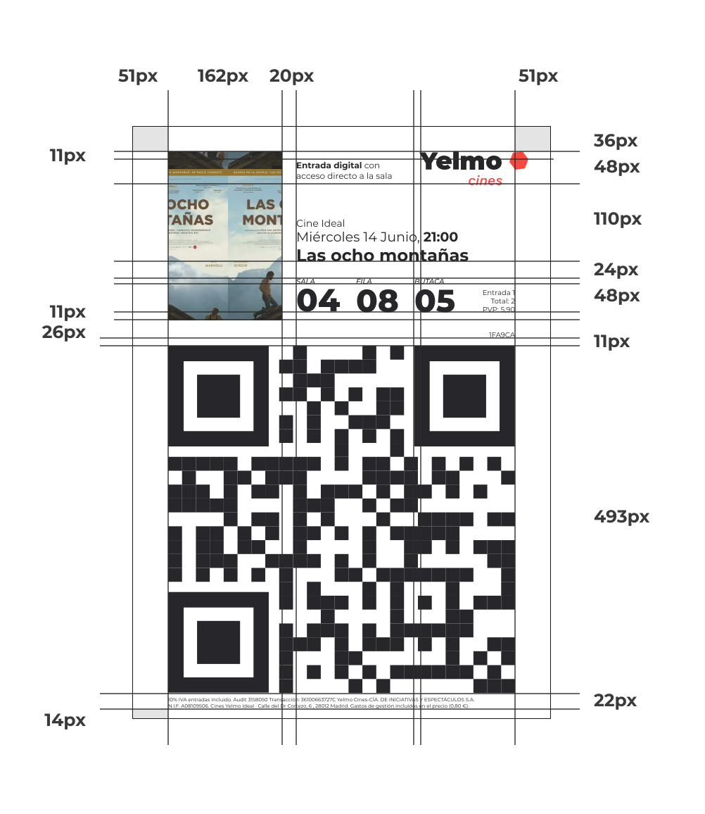

Cartelería y merchan
Entradas digitales

Retícula de entradas
Ya que las entradas impresas en el cine no se pueden modificar, nos centramos en las entradas digitales. Estas entradas digitales están diseñadas acorde a la marca, facilitando al usuario y al trabajador de Yelmo Cines la lectura de información. Se debe utilizar las tipografías y la jerarquía que aparece en esta retícula.